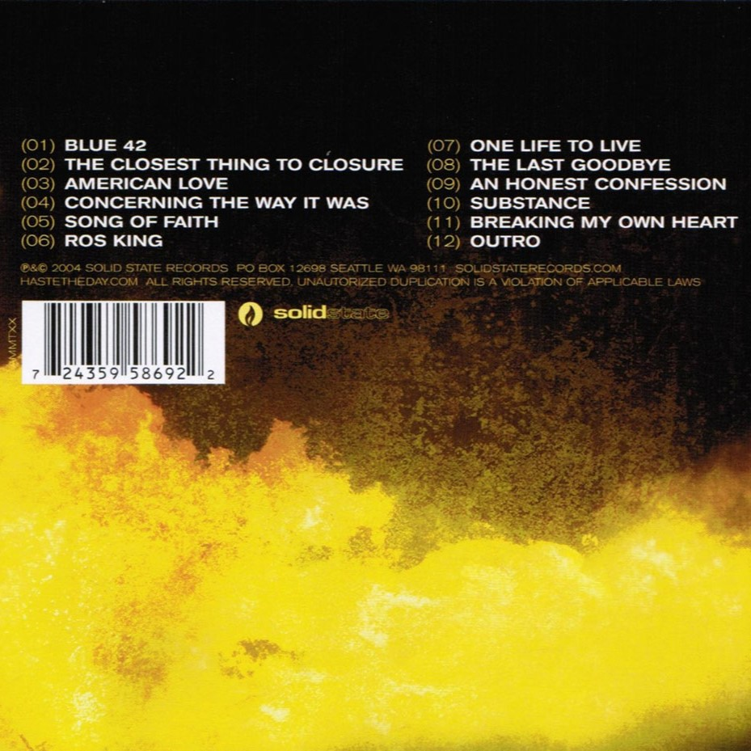

Haste The Day - Burning Bridges
Burning Bridges é o álbum de estreia do Haste the Day. Foi lançado em 9 de março de 2004, pela Solid State Records. Videoclipes foram lançados para "The Closest Thing to Closure" e "American Love".
American Love [Official Music Video]
Assista o video completo com legendas e se inscreva em nosso canal aqui
The Last Goodbye (Faixa 08)
Ouça o album completo aqui: